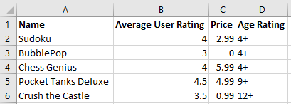
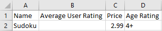
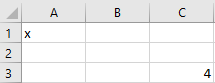

CSV Files#
Learning Objectives#
- Explain that a CSV file is a text file and not an Excel file.
- Explain the format of a CSV file.
- Open a CSV file in a text editor.
- Edit a CSV file in a text editor.
- Identify the header row and data rows.
- Write a simple CSV file "by hand" in a text editor.
- Explain the idea of delimiters.
- Use a delimiter other than comma to handle data with commas in the values.
- Open and edit CSV files in Excel.
- Use the Excel text import wizard to import data with an arbitrary delimiter.
Overview of CSV Files#
CSV stands for “comma separated value”. A CSV file is a text file that uses commas to separate, or delimit, values. CSV is a very popular format for storing small-to-medium sized data files for two reasons:
It’s portable - CSV files can easily by used on all major operating systems, Windows, MacOS, and Linux.
Most software intended for working with data can easily read and write CSV files because they are text files with a simple format.
But wait, you say. This is the 21st century. Everybody has Excel, right? What kind of primitive luddite doesn’t use Excel? And if someone has data, why can’t they just save it to an Excel file?
There are many situations where it’s not convenient to save to Excel. The most common is when working with a database or a legacy system. Say you want to extract data from a database and analyze it. As you will see momentarily, it is very easy to save directly to CSV. And since Excel can easily read CSV, there’s no need to convert to Excel format.
You have encountered CSV files in ACCY 570 already, and will likely encounter them in your careers. The most important thing to remember at this point is that a CSV file is a text file, not an Excel file.
The format of a CSV file#
Here’s a simple Excel file that has some data about video games. To keep this simple, we are only displaying data for 5 video games. For each game, we show the average user rating, price, and age rating.

If you use the “Save As” functionality in Excel and save this to a CSV file, the contents of the CSV file will be:
Name,Average User Rating,Price,Age Rating
Sudoku,4,2.99,4+
BubblePop,3,0,4+
Chess Genius,4,5.99,4+
Pocket Tanks Deluxe,4.5,4.99,9+
Crush the Castle,3.5,0.99,12+
Let’s take a look at this and compare it to what you see in Excel. In the first row of the CSV file, you see the first row of the Excel file. The value of each cell is separated by a comma. For example, the first row of the CSV file is:
Name,Average User Rating,Price,Age Rating
Notice that the first value is Name (cell A1 in Excel). Then there’s a comma, then Average User Rating (cell B1 from Excel). And so on. Notice that the formatting in Excel is lost. The CSV file only saves the data values.
Thus, each row of the Excel file is given its own line in the CSV file. The value of each cell in the row is separated by a comma. That’s it! Conceptually, that’s all there is to CSV files.
Header Row#
By convention, the first row of a CSV file contains the headers for the columns. This is not always the case, so watch out.
Missing Values#
Let’s look at the first two rows of our video game CSV file.
Name,Average User Rating,Price,Age Rating
Sudoku,4,2.99,4+
The first row contains the column names and the second row contains data about the popular game Sudoku. What if the user rating is missing for Sudoku? How would we represent that data? We would simply delete the rating, 4. See here:
Name,Average User Rating,Price,Age Rating
Sudoku,,2.99,4+
Notice that the second row is Sudoku,,2.99,4+. See the two consecutive commas? When you see consecutive commas like that, it means that there’s missing data. If we saved that data to a CSV file and then opened it in Excel, we would see the following:

Notice the rating for Sudoku is missing. When Excel parsed the file, it saw two commas in a row and inferred that there was a missing value.
Clean and Dirty CSV Data#
In a “clean” CSV file:
The first row contains column names.
Every row contains the same number of columns.
If there are \(n\) columns in the data, there should be exactly \(n-1\) commas in every row.
Every column has one data type. Thus, if column 1 contains numbers, then every value in column 1 should be a number. Obviously, this rule does not apply to the header row, which usually contains strings.
What happens if some rows have more values than others? It depends on the program you use to open the data. Excel will simply render the data and show blank cells where it thinks there’s missing data. We’ll explain the behavior of Pandas in the next chapter.
Working with CSV files in a text editor#
When you open a CSV file on Windows, it opens in Excel. You’re probably wondering why, if a CSV file is a text file, it opens in Excel? Because when you install Excel, Excel tells Windows that it wants to be the default program for CSV files. However, you do not have to open CSV files in Excel. You can open them in any text editor. You can even open them in Microsoft Word.
When working with simple CSV files, it’s probably easiest to use Notepad on Windows or TextEdit on Mac. (On a Mac, the Notes app generally won’t work for editing CSV file–that app can include graphics and non-string data, so it’s not meant for this purpose. TextEdit is the built-in text editor for Macs.)
You can easily create and edit CSV files in a text editor. Make sure to save the file with the extension “CSV”. If you use the Notepad in program on Windows, make sure to set the “Save as type” to “All Files (*.*)”.
If you’re on a Mac, saving to a CSV file from TextEdit is trickier (fortunately, we don’t have to do this very often!). After you’ve created your document in TextEdit, go to the Format menu at the top of the screen. One of the options there will be Make Plain Text; select that. When you save your file, TextEdit will include .txt as the file extension. After you’re done working on the file, save it. Now, in Finder, you can rename the file with a .csv file extension. (These extra steps are necessary because TextEdit uses RTF, or Rich Text Format, as its default. If you’re editing CSVs often, you can change that default setting.)
Try it now. Open a text editor and copy and paste the video game data from above. Then save it as a CSV file and open it in Excel. When you do, it should look exactly as it does in the first Excel screenshot above.
Working with CSV files in Excel#
You can easily work with CSV files in Excel. It just like working with an ordinary Excel file. When you’re done, make sure you save as CSV. Remember that when you save as CSV, you will only save the values in the cells. You will lose all formatting and formulas. Also, remember that Excel will save one continuous block of data. For example, say you only have data in cells A1 and C3. If you save as CSV, Excel will create a CSV file with 3 rows and 3 columns! Don’t believe me? Check out this screenshot:

When I save that to a CSV file and examine the contents in a text editor, here’s what I get:
x,,
,,
,,4
Excel did this because it wanted to save all the data on the worksheet and this was the only way.
Delimiters#
CSV stands for “comma separated value”. That means that commas separate the data values in each row. However, there are situations where we advise against using commas. For example, say you are storing company data and the company names have commas in them, e.g. “Deloitte & Touche, LLP”. If a data value has a comma in it, that will confuse software that reads CSV files; every time the software sees a comma, it will try to create a new column.
It turns out that you can use any character (or combination of characters) as a “delimiter” to separate your data values. Some common alternatives to commas are tabs, semicolons, and spaces. We recommend you use tabs if you cannot use commas. Many software packages, such as Excel and Pandas, support “tab delimited” data. Excel makes it particularly easy to save using tabs. Just go to File > Save As and choose “Text (Tab delimited) (*.txt)”. Typically, tab-delimited data is saved with the extention “.txt”, indicating a text file. However, we have seen files with the extension “TSV”, indicating a “tab separated value” file.
Opening text files in Excel using the text import wizard#
Excel has a “text import wizard” that allows you to convert text data, with arbitrary delimiters, to columns. You can access it in multiple ways.
If you open the text file using File > Open, Excel will usually open the text import wizard and let you choose the delimiter.
If you have copied text data to your clipboard, click on the dropdown under the Paste button on the Home tab. The click “Use text import wizard”.
If you have text data in Excel in a single column, go to the Data tab and click the button “Text to Columns”